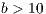
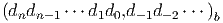
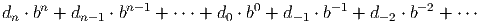
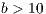
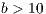

[
next
] [
tail
] [
up
]
Organizadores
Dagoberto Adriano Rizzotto Justo - UFRGS
Esequia Sauter - UFRGS
Fabio Souto de Azevedo - UFRGS
Leonardo Fernandes Guidi - UFRGS
Matheus Correia dos Santos - UFRGS
Pedro Henrique de Almeida Konzen - UFRGS
 
[
next
] [
front
] [
up
]
 
